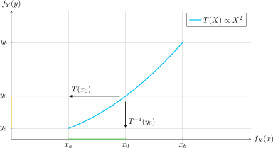

Sobre la transcripción
El objetivo de esta tarea es hacer una transcripción de los contenidos del curso Modelos Probabilísticos de Señales y Sistemas de las presentaciones hechas en LaTeX (Overleaf) para documentos en formato Markdown.
Esto tiene los siguientes objetivos:
- Explotar la versatilidad del formato Markdown para incluir nuevas formas de contenido multimedia.
- Crear una versión de página web del contenido, visible fácilmente desde celulares u otros medios, con MkDocs (esta misma página es un ejemplo).
- Crear presentaciones interactivas con Slidev. Las presentaciones PDF actuales son, por su naturaleza, estáticas.
- Crear un documento en LaTeX con los contenidos del curso pero en formato de libro de texto, utilizando los mismos archivos Markdown (
.md) como fuente.
Transcripción de referencia
El documento 5_21_1_markov_estado_estable.md tiene la transcripción de la presentación 21 "El vector de probabilidad en estado estable".
Por favor ver esa página.
LaTeX vs. Markdown
Tanto LaTeX como Markdown son lenguajes de descripción de formato. Markdown, de hecho, es una versión de sintaxis simplificada de HTML.
Estas son algunas equivalencias:
| Formato | LaTeX | Markdown | HTML |
|---|---|---|---|
| Cursiva | \textit{hola} |
*hola* |
<emph>hola</emph> |
| Negrita | \textbf{hola} |
**hola** |
<strong>hola</strong> |
| Sección | \section{Hola} |
# Hola |
<h1>Hola</h1> |
| Subsección | \subsection{Hola} |
## Hola |
<h2>Hola</h2> |
Elementos de la transcripción
La mayoría de las presentaciones tiene algunos o todos de los siguientes elementos.
-
Textos
Textos con formato como negrita, cursiva, títulos, listas y otros.
-
Fórmulas
Variables y ecuaciones en línea y ecuaciones en bloque.
-
Gráficos
Gráficos generados con PGF/TikZ y exportados como SVG.
-
Notas especiales
Secciones con formato especial para dar énfasis a afirmaciones o resultados.
Textos
Los textos, listas y otros similares siguen la sintaxis básica de Markdown.
Observaciones
- No todos los títulos de diapositivas (
frame) deben incluirse, solamente los que sean significativos y no redundantes. - Respetar el uso de énfasis con negritas y/o cursivas.
- Cuando hay énfasis con cajas de colores, ver sección notas especiales.
- Es posible utilizar las herramientas de Material for MkDocs, pero por el momento es mejor mantener el texto con formato básico.
- Deben ignorar (y eliminar) las siguientes instrucciones de LaTeX:
\begin{frame} ... \end{frame}(excepto los títulos, cuando corresponde)\framebreak\noindent
Fórmulas
Todas las fórmulas son escritas con notación de LaTeX. Esta documentación utiliza MathJax para renderizar las fórmulas en el navegador. La notación es idéntica:
que genera:
Hay variables y expresiones como \(x_{1,2}\) o \(b^2\), y ecuaciones en línea, como \(a \neq 0\), y es muy importante usar la notación matemática dentro del texto. Por ejemplo, la variable aleatoria es \(X\) y no X.
Observaciones
- Eliminar el
*en\begin{equation*}, que indica ecuación no numerada (porque no aplica aquí). - Si existiese el delimitador
\[ ... \]para ecuaciones en bloque, sustituirlo por\begin{equation} ... \end{equation}. - En las integrales, sustituir el comando especial
\di{x}por~\mathrm{d} x, que describe el operador \(\mathrm{d} x\) en una integral, como en \(\int_{-\infty}^{\infty} f_{X}(x) ~\mathrm{d}x = 1\). - Al finalizar la transcripción, revisar por favor minuciosamente la correspondencia de las ecuaciones.
Gráficos
La gran mayoría de los gráficos en las presentaciones son hechos con PGF/TikZ, un poderoso paquete de diseño de imágenes.
El directorio images/ tiene la versión SVG de todas las imágenes de todas las presentaciones y deben usarlas en su lugar respectivo. El formato es:
que muestra:

Observaciones
- Las referencias dentro del texto a una figura con
\ref{label}(si las hubiese) deben ser sustituidas por una descripción literal, como "la figura anterior" o "la figura siguiente", por ejemplo. - Es necesaria una descripción adecuada de la imagen dentro de los paréntesis cuadrados. Por ejemplo:
. Esta descripción es utilizada para accesibilidad de personas con discapacidad visual y para buscadores web.
Notas especiales
En las presentaciones hay varias "cajas de colores" para resaltar ciertas informaciones y definiciones. Es posible transcribirlas en admoniciones de Markdown, cuyo formato es:
que se convierte en:
Nota
Hola, soy una nota
En particular, serán transcritos como notas:
- Introducción de una presentación
- Definiciones
- Resultados con énfasis
- Ejemplos o ejercicios
Introducción de una presentación
Al inicio de cada presentación hay una breve reseña del tema. Esta misma reseña estará al inicio de la página transcrita en Markdown, como una admonición.
y resulta en:
Introducción
Cuando existe una cantidad definida de estados, es posible modelar las transiciones entre todos estos estados.
Luego de suficientes transiciones, y al alcanzar un "régimen permanente", cada estado tiene una probabilidad definida.
Definiciones
Las presentaciones tiene definiciones que están dentro de un entorno llamado bloque, que será transcrito en una admonición tipo tip. Notar que hay un título de descripción.
\begin{bloque}{Definición de una variable aleatoria}
Para un espacio de eventos $S$, una \textbf{variable aleatoria} es cualquier regla que asocia cada resultado elemental de $S$ con \textbf{un número}. Es decir, es una \textbf{función} cuyo dominio es el espacio (quizá abstracto) de eventos o muestras, y cuyo rango es algún subconjunto de los números reales.
\end{bloque}
!!! tip "Definición de una variable aleatoria"
Para un espacio de eventos $S$, una **variable aleatoria** es cualquier regla que asocia cada resultado elemental de $S$ con **un número**. Es decir, es una **función** cuyo dominio es el espacio (quizá abstracto) de eventos o muestras, y cuyo rango es algún subconjunto de los números reales.
y resulta en:
Definición de una variable aleatoria
Para un espacio de eventos \(S\), una variable aleatoria es cualquier regla que asocia cada resultado elemental de \(S\) con un número. Es decir, es una función cuyo dominio es el espacio (quizá abstracto) de eventos o muestras, y cuyo rango es algún subconjunto de los números reales.
Resultados con énfasis
Algunos resultados o frases tienen un énfasis (caja verde, sin título) con un entorno llamado énfasis.
y resulta en:
La más famosa de las funciones de probabilidad es la normal (o gaussiana), que describe la noción de que las probabilidades de ocurrencia de un evento están concentradas de forma simétrica alrededor de un valor central.
El string "" le quita el título.
Ejemplos o ejercicios
Los ejemplos (mostrados dentro de \begin{framex} ... \end{framex}) son casos especiales del texto que tendrán el siguiente formato:
\begin{framex}{Ejemplo de la divisibilidad por un número primo}{Definición clásica de Laplace}
\begin{planteamiento}
Determine la probabilidad de que un número natural cualquiera es divisible por un número primo $n$.
\end{planteamiento}
\begin{itemize}
\item Si $n$ es un número primo, entonces cada $n$-ésimo número (empezando por $n$) es divisible por $n$.
\item Por lo tanto, en $n$ enteros consecutivos hay un resultado favorable, y por tanto:
\end{itemize}
\[
P(\text{un número es divisible por un primo $n$}) = \frac{1}{n}
\]
\begin{figure}
\centering
\begin{tikzpicture}
...
\end{tikzpicture}
\end{figure}
\end{framex}
---
:material-pencil-box: **EJEMPLO**
!!! example "Título representativo del problema"
Texto del enunciado dentro de la *admonición* tipo `example`, que incluye los datos del problema y la pregunta por resolver.
Aquí están
- todos
- los pasos
- necesarios
- para la solución
y finalmente:
!!! note ""
Respuesta al problema con énfasis dentro de la *admonición*.
---
y resulta en:
EJEMPLO
Título representativo del problema
Texto del enunciado dentro de la admonición tipo example, que incluye los datos del problema y la pregunta por resolver.
¿Cuál es la expresión para la probabilidad del evento \(A \cap B\) en la gráfica mostrada?
Aquí están los pasos de la solución del problema. Incluyendo gráficas:
y también ecuaciones:
- y todos
- los pasos
- necesarios
- para la solución
y finalmente:
Respuesta al problema con énfasis dentro de la admonición tipo note pero sin título (con "") y mostrando las ecuaciones relevantes:
Observaciones
- Los ejemplos deben tener un título representativo
- Actualmente el enunciado está dentro del entorno
planteamiento. - Notar la línea horizontal
---antes y después del ejemplo - Las ecuaciones en bloque dentro de las admoniciones deben estar rodeadas por
$$. - Respetar la estructura:
---
:material-pencil-box: **EJEMPLO**
!!! example "Título del problema"
Texto del enunciado.
Pasos de la solución.
!!! note ""
Respuesta al problema.
---
Nota: puede copiar y llevar el fragmento anterior cada vez que va a incluir un ejemplo.
Uso de inteligencia artificial generativa
¿Podemos usar IA?
¡Por supuesto!1 (y recomendado). ChatGPT, Gemini, DeepSeek, Claude o cualquier otro pueden ayudar a transformar el código de LaTeX en Markdown, solo hay que pedirlo. Pero ¡cuidado!, hay que revisar bien la sintaxis y los casos especiales y verificar su presentación en la documentación, para que sea fiel (totalmente fiel) a la presentación, especialmente con precisión de la matemática, etc.
-
No podría evitarlo, de todos modos
 ↩
↩